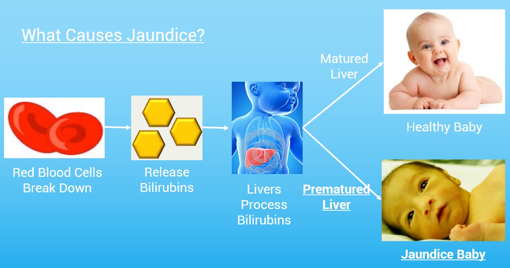
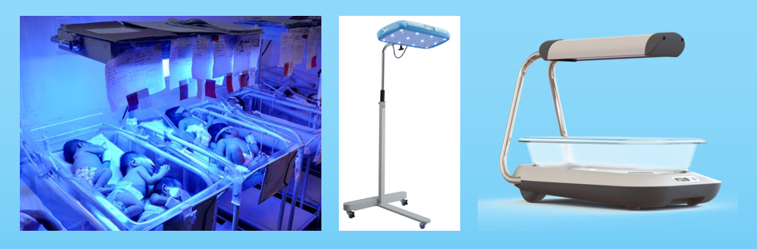

Jaundice Therapy Device
Background
In 2016-2017 academic year, I was a member of Cornell Engineering World Health, a project team with the mission to make innovative and low-cost medical devices for developing countries and low-resource communities. During our research and brainstorming phase, we found a lacked addressing medical problem - infantile jaundice, a condition where newborn baby’s skin and eyes are yellow due to immature liver not being able to process a build-up substance in the blood called bilirubin.
Infantile jaundice has a simple phototherapy cure, which is shining blue light on the baby. Blue light can change bilirubin composition and allow it to exit baby’s body. The American Academy of Pediatrics has set a clinical practice guideline in 2011 to standardize phototherapy treatment: 1) emission of light in the blue-to-green range (460 - 490 nm) and 2) irradiance of light at least 30 uW/cm^2/nm. Phototherapy following this guideline would demonstrate decrease of bilirubin concentrations during the first 4 to 6 hours of exposure.
Despite the simplicity of cure, more than 6 millions jaundiced newborns still lack access to proper phototherapy treatment, risking potential brain damages or even death. We wanted to make jaundice phototherapy treatment more accessible and came up with a portable, sustainable, low-cost jaundice therapy device.
Design and Development
 When researching, we found that there had been efforts into making jaundice phototherapy device. But these devices at the market were very costly and not easily transportable. Some even allow multiple babies in one device, which can lead to infection.
With this in mind, we brainstormed and sketched out our initial design among the team and then consulted with Dr. Srisatish Devapatla to finalize the design. Our design was a lightweight foldable device just like a laptop with a 180 degree roll top. Blue LEDs were embedded along the five strips on top and also the bottom. The bottom was made of waterproof fabric and bean bags to create a comfortable lying place. Next, George finalized the design dimension and CADed out the design. We then entered the building phase.
We built the top five strips using a three step molding process. First, we cut out a wood mold using a jigsaw (which could be done much easier and more accurate via laser cutting). Second, we heated-gun PVC to make it bend and wrap along the mold. Third, we clamped the PVC and waited for it to cool down to stay in the desired shape. We then cut the mold smaller and repeat the molding process to create the other four strips. Attached are pictures of our small team working on molding: big brother George, witty Michael, fearless leader Nadine, and goofy me.
While George was working on the hinge structure and Michael on the bottom bean bag base, in parallel, Nadine and I were working on battery research and testing with the LED strips to ensure they meet the AAP guideline. To make our device portable and sustainable, the device would have to be powered by rechargeable batteries. I looked up and tested out different batteries, e.g. alkaline, lead acid, lithium ion… All of them can power the device, but alkaline batteries are not rechargeable and fail to meet the sustainability spec. Lead acid batteries are rechargeable but very bulky and therefore fail the portability spec. Lithium ion batteries are rechargeable and light weighted due to its high energy density, so we went with lithium ion batteries and we found some small lithium ion batteries with 3A capacity.
To meet the AAP guideline, our design has to meet two specifications: 1) emission of light in the blue-to-green range (460 - 490 nm) and 2) irradiance of light at least 30 uW/cm^2/nm. The first spec wavelength is met by our choice of LED and it can be verified in the LED datasheet that the wavelength of the blue LED is 465 - 470 nm, which is within the range. For the second spec irradiance, we measured the irradiance of our device using a lux meter and we measured 250-420 lux (intensity was highest at the center and lowest at the edge). 30 uW/cm^2/nm (at 555nm) = 204.9 lux [conversion source] or ~100 lux at 490 nm if we approximate the value based on the photopic luminosity function, so our device has irradiance level triple the 100 lux spec.
Once testing and verification were done, I CAD and 3D printed a black box to host the electronics. It was essentially a battery box that contained an on/off switch and connected three lithium ion batteries in series to bump up the nominal voltage to 3.7V * 3 = 11.7V. It then passed through a voltage regulator that dropped the voltage down to a steady 8.5V. (Battery voltage decreases as its capacity is using up. Lithium ion battery is 4.2V when fully charged and it should be recharged when voltage is down to 3.2V to avoid damaging the battery. For three lithium ion batteries connected in series, this means a voltage swing from 12.6V to 9.6V. A voltage regulator eliminates such voltage swing and ensures constant voltage and brightness for LED strips, which we found 8.5V delivered the desired brightness and intensity.)
Lastly, once the mechanical was done, I worked on integrating the electrical with the mechanical and our jaundice therapy device was completed. The device had about 400 LEDs in total. At 8.5V, they are drawing 0.31A of current. The lithium ion battery we chose has capacity of 3AH. Given the fact that we should draw at most 80% of the battery capacity to avoid damaging the battery, our device could last 6-7 hours before the need to recharge the battery.
Result and Reflection
In a two semester time frame, from concept, design to prototype, we successfully created an innovative jaundice therapy device that has three distinctive advantages:
- Portable: The device is lightweight and 180 degree roll top foldable. It is also powered by battery, making it accessible to even the most rural place where there is no electricity.
- Sustainable: LED strips last 50,000 hours as opposed to halogen bulbs that last only 2,000 hours. Lithium ion batteries can be recharged more than 500 times. And the bottom lying layer of the device is waterproof, making it easy to clean and maintain.
- Low cost: The estimated cost to make our device is ~$80 while a current market device cost $400-$5000.
Our project was also submitted to the 2017 Cornell Engineering Innovation Competition. During the final round, I was happy to pitch enthusiastically about our project in front of five judges. We were later awarded $5000 on the Yunni and Maxine Pao Social Innovation Award to further support the project team's mission to make accessible medical devices. In addition to the core engineering team’s effort, it is equally important to recognize the business team ( Theresa, Joanna, Rohit ) for making beautiful poster and drafting awesome business plan, the leadership team ( Annie, Justin ) for leading and signing up the project to various events and competitions, and two senior team member ( Adarsh, Samir) for setting up and helping the project halfway.
The natural next step was to test the device with hospital and user, and got their feedback to further improve the device. There were many improvements that can be made. However, as George was graduating and I was trapped with no spare time in three project based classes the following semester, the team decided to pause this project for now and allocated resources to pursue other projects that were more relevant to the new team’s skill sets. It was sad to make something that was never put into actual use, but we indeed proposed an innovative concept to address an unmet need and proved that it was doable to people who are interested in making jaundice therapy more accessible.